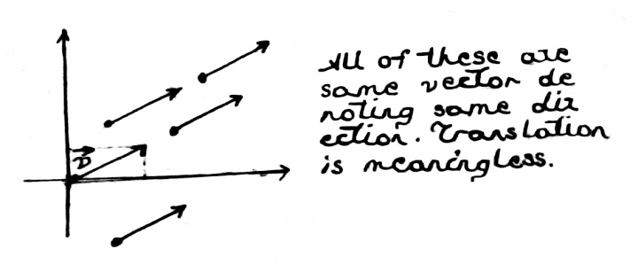
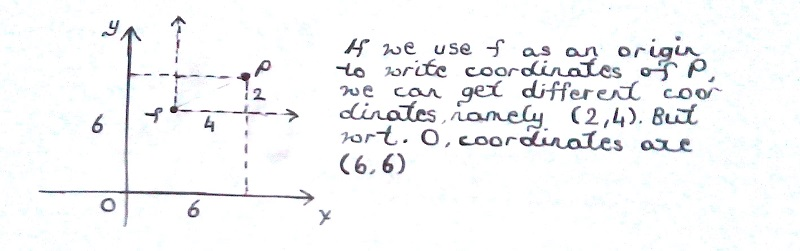

Table of Contents
1 Affine Spaces and Transformations
You know about vectors and that geometrical vectors correspond to directions. The place we need to be careful arises when we also consider points. You might have seen mathematics books where they simply defined points as ends of vectors. This might led you to think that only the concept of vector and vector space would be enough. But, the fact that there are diffferent operations you can do with points that you can't do with vectors and vice versa should indicate that we sould define them seperately.
In real life, you can walk from one point to the other point. It doesn'really make sense to walk from one direction to the other. In mathematical terms, we say translating a vector does not change the vector but you can translate points. Translating means moving around by the way, or carrying around.
On the other hand, the most fundamental thing you can do with a point is to move from one to the other, on a straight line. If you subtract two points, you can get a vector denoting the direction to go from one point to the other. But what does it mean to add two points? If you do component wise addition, you are again treating points as vectors. Thus, it does not make sense to add two points. What does it mean to add north pole to south pole anyways, in real life?

Figure 1: Translating a vector does not make sense
On the above figure, you can observe the idea why translating vectors does not make sense. Why all of these vectors are the same? Because they all have the same coordinates, say \((3, 4)\). Their extend on each coordinate axes are the same. This is because we agreed that we are going to specify coordinates in relation to the origin. In a way, origin plays a special role.
Here is the idea behind the affine space. In an affine space, we have a vector space whose origin we try to think of as not special. If origin is not special, you can use any point as an origin. This means, there are many ways to write the coordinates of a point, depending on the origin you chose.

Figure 2: Coordinates of a point might differ on an affine space
This brings to the idea of an affine frame. You can think of them as local coordinate systems that we carry around.
Affine frame
In an affine space, we describe any
point \(P\) by first starting from some origin point \(T\), and then adding to it
a linear combination of vectors. These vectors are expressed using coordinates \(c_i\)
and a basis of vectors.
\[P = T + \sum_i{c_i \vec e_i}\]
and the matrix
\[[\vec e_1 \quad \vec e_2 \quad \vec e_3 \quad T] = \vec f^T\]
is called an affine frame \(f\) wrt. point \(T\), denoted \(\vec f^T\). \(c = (c_1, c_2, c_3, 1)\) denotes the coordinates of the point \(P\) on this frame. We can write \(P = \vec f^T c\)
In order to specify a point using a frame, we use a coordinate 4-vector with four entries, with the last entry always being 1. To express a vector using an affine frame, we use a coordinate vector with a 0 as the fourth coordinate (i.e., it is simply a sum of the basis vectors). The use of coordinate 4-vectors to represent our geometry (as well as 4-by-4 matrices) will also come in handy when we model the behavior of a pinhole camera later.
Let's unroll the matrix denoting the frame we show above, namely \([\vec e_1 \quad \vec e_2 \quad \vec e_3 \quad T] = \vec f^T\).
\begin{bmatrix} 1 & 0 & 0 & t_1 \\ 0 & 1 & 0 & t_2 \\ 0 & 0 & 1 & t_3 \\ 0 & 0 & 0 & 1 \\ \end{bmatrix}is what we get. This would translate the origin point \((0, 0, 0, 1)\) to \((t_1, t_2, t_3, 1)\). Take a look at this for a while and think about it. Remember we said points have forth coordinate 1 and vectors have fourth coordinate 0. With this, we are going to define affine transformation as having the form
\begin{bmatrix} a & b & c & d \\ e & f & g & h \\ i & j & k & l \\ 0 & 0 & 0 & 1 \\ \end{bmatrix}in the 3D space.
In CG, we focus on 3D space, or 2D.
Say we have a point \(P = \vec f^T c\). How we can apply an affine transformation the this point?
\[ \left[ \begin{array}{cc} \vec e_1 & \vec e_2 & \vec e_3 & T \end{array} \right] % \left[ \begin{array}{cc} a & b & c & d \\ e & f & g & h \\ i & j & k & l \\ 0 & 0 & 0 & 1 \end{array} \right] % \left[ \begin{array}{cc} c1 \\ c2 \\ c3 \\ 1 \end{array} \right] = P' \]
As you can see, we write it as \(P = \vec f^T A c\). You can think of this in two different ways. You can tell that by performing \(A c\), we find the new coordinates of transformed point, ie. \(c'\) on the frame \(\vec f^T\) or you can think of it as finding the point that has coordinates \(c\) an a transformed new frame \(\vec f^T A\). With these, we can now develop couple of useful transformations.
Let's first pin down the translation transformation we have been talking about. For a point with coordinates \((c_1, c_2, c_3, 1)\), if we translate it with the amounts \((t_1, t_2, t_3, 0)\), ie. we are adding a vector to it, we should get to the point \((c_1 + t_1, c_2 + t_2, c_3 + t_3, 1)\). A 4x4 matrix that has this effect is easy to find. Here it is
\[ \left[ \begin{array}{cc} 1 & 0 & 0 & t_1 \\ 0 & 1 & 0 & t_2 \\ 0 & 0 & 1 & t_3 \\ 0 & 0 & 0 & 1 \\ \end{array} \right] = T \]
Also, we can still express our 3x3 linear transformations in this new 4x4 setting. We just embed the linear transformation to the upper-left 3x3 part of a 4x4 matrix.
\[ \left[ \begin{array}{cc} a & b & c & 0 \\ e & f & g & 0 \\ i & j & k & 0 \\ 0 & 0 & 0 & 1 \\ \end{array} \right] = L \]
Observe that we can decompose an affine transformation into its linear and translational parts.
\[ \left[ \begin{array}{cc} i & t \\ 0 & 1 \end{array} \right] % \left[ \begin{array}{cc} l & 0 \\ 0 & 1 \end{array} \right] = A \]
With all these in mind, we are now going to talk about couple of famous linear and affine transformations. We will develop their 4x4 matrices. You can see that I am skipping these parts fast in terms of math. We assumed you had calculus background and linear transformations should be familiar to you. I just explained what we mean by affine, on top of that knowledge.
Linear transformations preserve collinearity, parallelism and origin. Any two vector belonging to the same linear subspace will be in the same linear subspace after the transformation. The only difference between an affine space is that we try to forget that origin is special. Thus, affine transformations do not preserve the origin. If \(\vec 0\) is in an affine space, it might not be there after an affine transformation.
Let's now start with rotations. These are linear transformations.